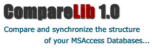
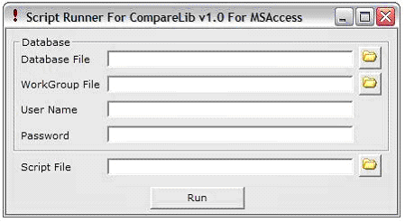
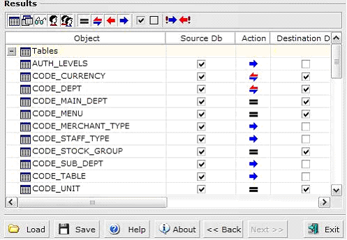

23 Jan 2004
23 Jan 2004
First Posted
 vbAccelerator ImageList Control and Class v2.0
vbAccelerator ImageList Control and Class v2.0

Klik! CompareLib 1.0
Compare Access databases and create synchronisation scripts
The new Klik! CompareLib is a tool which compares and sychronizes the structural differences in MSAccess 97/2000/XP databases. It has a simple and yet detailed wizard style interface which allows comparison and analysis of databases, and can generate the merge scripts to make the compared databases structures equal. A script applying tool, ScriptRunner, is included with the package to easily apply the generated scripts later.
About CompareLib 1.0
Klik! CompareLib is a tool which can be used to compare and synchronize the structural differences on MSAccess (97/2000/XP) databases and can compare Tables (including columns,keys and indexes), Queries (Views and Procedures), Users and Groups. It offers an optimized compare engine that allows you to do the compare process in a few seconds even in the large databases.
Klik! CompareLib is a stand-alone application with a simple to use yet detailed wizard style user interface. There are numerous options for comparison and a drill-down interface allowing compare results to be analysed at various detail levels.
The product also offers the ability to synchronize compared databases to make them equal. Merge scripts prepared using the product can be easily applied using the ScriptRunner application:
Script Runner Application
Using vbAccelerator Controls
Klik! used the SGrid Control and the ImageList control to create an easy to use and attractive interface to show differences and allow synchronisation to be configured:
Klik! CompareLib Results Screen
"SGrid helped us a lot to achieve the freedom we wanted from a grid and we could implement a tree style interface with it perfectly in a way we want."
Özden Irmak, President, Klik! Software
Klik! Software Website
More information about Klik! Software and their CompareLib product can be found at their site, where trial versions are available for downloaded: